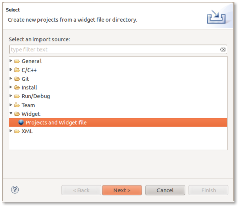
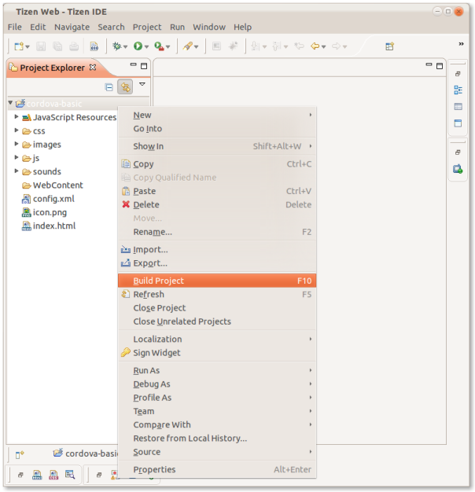
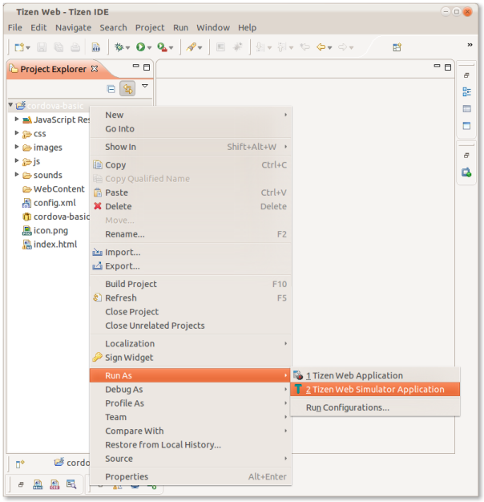

Getting Started with Tizen
このガイドは、 Cordova のための開発環境セットアップ方法、またシンプルなアプリの動かし方を解説します。 Cordova は以前は PhoneGap と呼ばれていたため、いくつかのサイトは PhoneGap という名前をまだ使用しています。
1. 必要なもの
- Linux Ubuntu 10.04/10.10/11.04/11.10 32-bit, Windows XP SP3/7 32-bit.
2. SDK と Cordova のインストール
- Tizen SDK のダウンロードとインストール
- Cordova の最新版をダウンロードし解凍します。これから tizen ディレクトリと一緒に作業を進めます
- (オプション) Tizen の Cordova テンプレートプロジェクトをインストール: copy the
/templatesディレクトリの中身を Tizen Eclipse IDE の web templates ディレクトリにコピーします (例:/home/my_username/tizen-sdk/IDE/Templates/web)
3. 新規プロジェクトの作成
-
方法 #1: Cordova Tizen プロジェクトサンプルのインポート
- Tizen Eclipse IDE を起動します
- File -> Import -> Tizen Web Project を選択します

- Next をクリックします
- Select root directory がチェックされていることを確認します
- Copy projects into workspace がチェックされていることを確認します
- Browse をクリックします
- Cordova Tizen の "samples" プロジェクトディレクトリのうちの一つ (例:
/cordova-basic) を Browse し、選択します
- Finish をクリックします
- これで、プロジェクトはインポートされ Project Explorer ビューに表示されます
-
方法 #2: Tizen Eclipse IDE の Cordova Tizen プロジェクトテンプレートの使用
- Tizen Eclipse IDE を起動します
- File -> New -> Tizen Web Project を選択します
- 項目 User Template と User defined を選択します
- Tizen Cordova template のうちの一つ (e.g: CordovaBasicTemplate) を選択します
- Project name とその Location を入力します
- Finish をクリックします
- これで、プロジェクトは作成され Project Explorer ビューに表示されます
4. Hello World の作成
-
プロジェクトのビルド:
- Project Explorer ビューの中のプロジェクトを 右クリック して Build Project を選択します

プロジェクトのルートディレクトリに、ウィジェットパッケージが生成されているはずです (例:
cordova-basic.wgt)注意 Tizen Cordova プロジェクトで提供されているサンプルは、基本的な hello world アプリケーションではありません。それらは、 Battery Cordova API のシンプルな使用例です。
5A. シミュレーターへのデプロイ
-
Project Explorer ビューの中のプロジェクトを 右クリック して Run As と Tizen Web Simulator Application を選択します

5B. デバイス/エミュレーターのデプロイ
- デバイスが正常に起動/接続/設定されていることを確認 ("Date and Time" 設定は正しく設定されている必要があります) します
-
Connection Explorer ビューでアプリケーションのデプロイ先を選択します (Window Menu -> Show View -> Connection Explorer を選択)
-
Project Explorer ビューの中のプロジェクトを 右クリック して Run As と Tizen Web Application を選択します